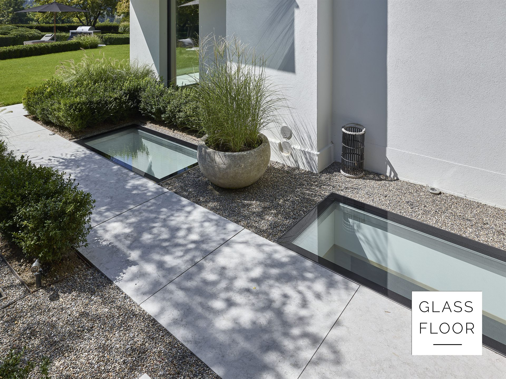

Časté otázky o pochozích světlících.
Rozměry, zatížení, požární odolnost, dodání i začátek spolupráce. Na co se nás ptají nejčastěji.
Nejčastější otázky o pochozích světlících.
Co je GLASSFLOOR?
GLASSFLOOR je zakázkově vyráběný pochozí světlík švýcarského výrobce Heliobus AG. Nosné prosklení slouží jako běžně pochozí část terasy, střechy nebo podlahy a přivádí denní světlo do podlaží pod ní.
Kdo GLASSFLOOR vyrábí a kdo ho dodává v České republice?
Vývoj, konstrukce a kompletace každého kusu probíhají ve výrobě Heliobus AG ve švýcarském St. Gallen. V České republice systém GLASSFLOOR dodává společnost WT - WINDOWS TOMORROW s.r.o., specialista na denní světlo v interiéru.
Jaké rozměry se vyrábějí?
Řady chrome a pure standardně v šesti formátech otvoru od 80 × 80 do 250 × 80 cm, řada circle ve čtyřech průměrech 60 až 120 cm. Na míru se vyrábí od 40 cm bez horní hranice.
Jaké zatížení pochozí zasklení snese?
Užitné zatížení je 5,0 kN/m², třída odolnosti P8B. Vyšší únosnost včetně pojezdu se navrhuje zakázkově.
Hodí se GLASSFLOOR i do interiéru nebo jako požární strop?
Ano. Řada pure se používá i v podlahách obytných prostor a varianta FIRESTOP plní funkci požárně dělicí konstrukce s odolností REI 30 až REI 120.
Kolik GLASSFLOOR stojí?
GLASSFLOOR je zakázkové řešení bez ceníku, cena vychází z technického návrhu konkrétního kusu. Po prvním posouzení projektu rádi připravíme orientační nabídku.
Jak dlouho trvá dodání?
Každý kus jde do výroby až po odsouhlaseném návrhu a vyrábí se ve Švýcarsku. Mezi zadáním a osazením počítejte s několika týdny.
Jak spolupráce začíná?
Pošlete základní výkres, řez nebo popis záměru. Nejprve posoudíme, zda je GLASSFLOOR pro danou konstrukci a architektonický záměr vhodným řešením, a navrhneme další technický postup.
Představte nám svůj projekt.
Pošlete nám základní výkres nebo popis záměru. Posoudíme vhodnost systému GLASSFLOOR a navrhneme další technický postup.
Každý projekt nejprve technicky posuzujeme. GLASSFLOOR je zakázkové řešení bez ceníku. Cena vychází z technického návrhu konkrétního kusu.
Oficiální zastoupení GLASSFLOOR® pro Českou republiku – WT - WINDOWS TOMORROW s.r.o. Vyrábí a garantuje Heliobus AG, St. Gallen, Švýcarsko.
Stačí základní výkres, řez nebo jen popis záměru. Klidně i fotka nebo náčrt tužkou.
Řekneme na rovinu, jestli GLASSFLOOR na vaši konstrukci sedí, a proč.
Konkrétní řadu, rozměr a způsob osazení, případně i orientační cenu.